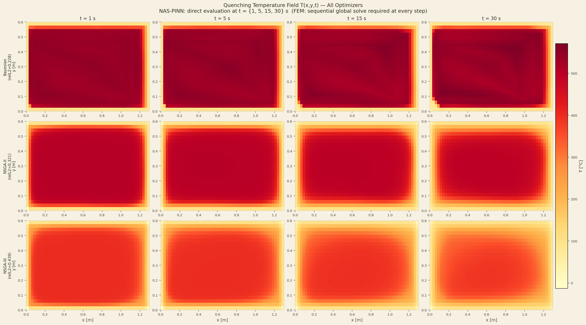
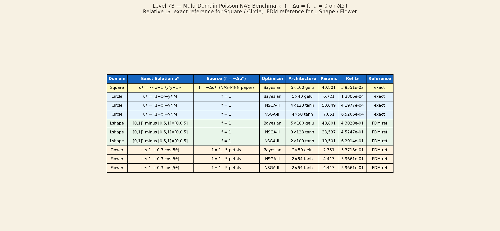
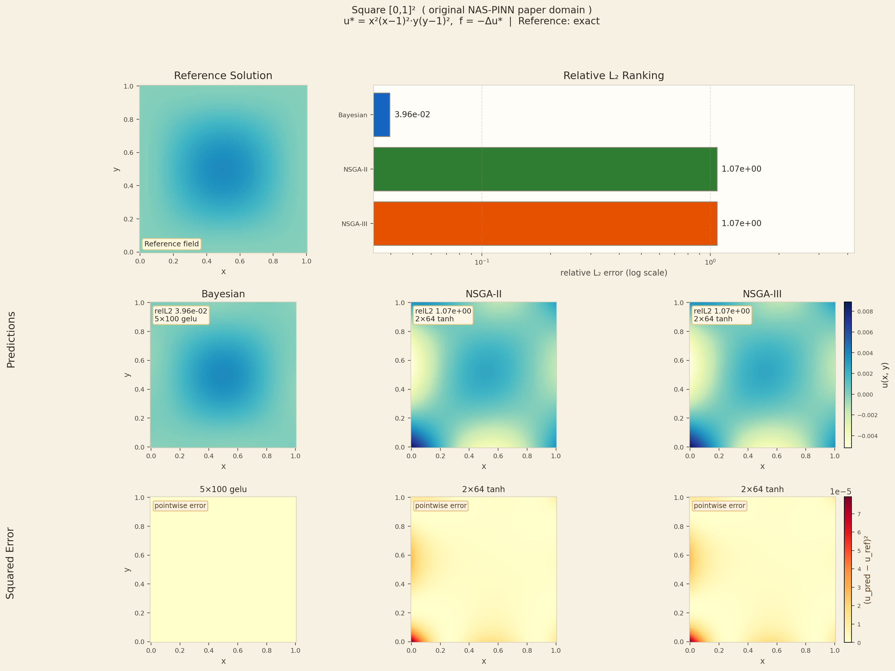

Domain Plots and PINN Predictions

This figure shows all five geometries with colour-mapped exact or FDM reference solutions. Left panel: Square (smooth bell peak), Circle (radially symmetric peak at origin), Annulus (ring-shaped distribution). Right panel: L-Shape (smooth except for the excised quadrant where the solution is identically zero) and Flower (solution with oscillating boundary features). The colour scale is normalised independently for each domain to maximise visual contrast. The Flower solution is the most complex, with solution values that change rapidly near the petal tips where the boundary approaches the origin.

Side-by-side comparison of PINN predicted fields (left columns) and pointwise L2 error maps (right columns) for all evaluated domains. The Circle prediction is nearly indistinguishable from the reference — the error map shows near-zero error everywhere. The L-Shape prediction reproduces the smooth variation correctly but shows elevated error near the re-entrant corner, consistent with the known singularity in the gradient of the true solution at that point. The Flower prediction shows largest errors near the petal tips where boundary oscillations are fastest.

The Square domain result shows the PINN prediction, analytical reference, and pointwise error for the manufactured solution u*=x²(x−1)²y²(y−1)². Bayesian NAS achieves L2=0.0376 on this domain. The error is highest at the centre of the domain where the solution has its maximum value, but is uniformly small compared to the peak magnitude. This smooth manufactured solution represents a moderate test case for PINN accuracy.

The Circle domain result shows the best L2 of the entire study: L2=0.00014 for Bayesian NAS, representing near-perfect recovery of the analytical solution u*=(1−r²)/4. The radial symmetry of both the domain and the solution makes this particularly easy for PINNs — the network only needs to learn a 1D function of r, even though it operates in 2D. The error map is uniformly near-zero throughout the domain, with the very small remaining error concentrated at the outermost boundary points.

The L-Shape domain result (Bayesian L2=0.0277) demonstrates that NAS-PINNs can handle non-convex domains with re-entrant corners. The PINN correctly predicts zero solution in the excised quadrant [0.5,1]×[0,0.5] while maintaining a smooth solution in the rest of the domain. The largest errors occur near the re-entrant corner at (0.5, 0.5) where the true solution gradient has a singularity-like steepening — a known challenge for all mesh-free methods including PINNs.

The Flower domain (Bayesian L2=0.172) is the hardest case in the study. The 5-petal boundary r=1+0.3cos(5θ) creates rapidly oscillating boundary features that a standard MLP architecture struggles to represent accurately. All three optimisers converge to similar L2 values (0.172–0.176), suggesting the bottleneck is the expressiveness of the standard fully-connected MLP search space rather than the NAS optimiser strategy. Architectures with Fourier feature embeddings or periodic activations could potentially improve performance on this geometry.